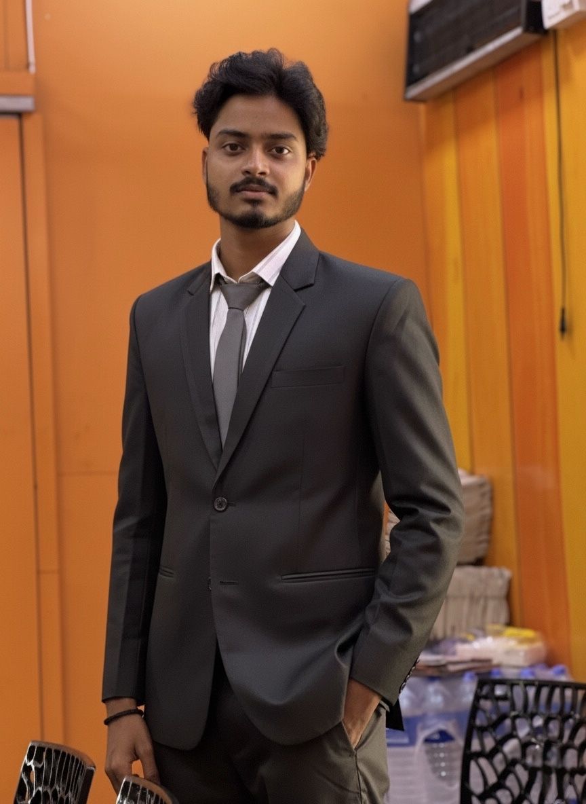

GIS • Remote Sensing • Earth Science
Mapping Earth.
Revealing change.
I’m SK Wasim Aktar, a geospatial analyst transforming satellite data, terrain models and environmental evidence into clear spatial decisions and interactive Web GIS experiences.
10Live Web GIS projects
6Studies in progress
GIS + PythonIntegrated workflow

Geospatial researcher
REMOTE SENSING ✦ WEB GIS ✦ TERRAIN MODELLING ✦ PYTHON ✦ EARTH OBSERVATION ✦ SPATIAL ANALYSIS ✦ REMOTE SENSING ✦ WEB GIS ✦ TERRAIN MODELLING ✦ PYTHON ✦ EARTH OBSERVATION ✦ SPATIAL ANALYSIS ✦
Selected work
Spatial projects with
real-world purpose.
From regional thermal patterns to watershed priority and natural-hazard potential, each project connects analysis with an accessible interactive map.
Research in motion
Current explorations.
New work in terrain modelling, network analysis, mangrove monitoring, health accessibility and urban biodiversity.
Terrain & Least-Cost Network Analysis
DEM-derived slope surfaces, cost distance and route back-link modelling based on the supplied map layouts.
Sundarban Mangrove Analysis
Earth observation workflow for studying mangrove landscapes.
West Bengal Blood Bank Study
Spatial accessibility and service-network exploration.